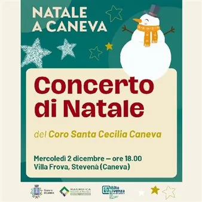

mer 2 dic · dalle 18:00
Concerto di Natale - Coro di Santa Cecilia Caneva
𝐍𝐀𝐓𝐀𝐋𝐄 𝐀 𝐂𝐀𝐍𝐄𝐕𝐀 𝗖𝗢𝗡𝗖𝗘𝗥𝗧𝗢 𝗗𝗜 𝗡𝗔𝗧𝗔𝗟𝗘 del 𝗖𝗼𝗿𝗼 𝗦𝗮𝗻𝘁𝗮 𝗖𝗲𝗰𝗶𝗹𝗶𝗮 𝗡𝘂𝗼𝘃𝗮 𝗠𝗲𝗿𝗰𝗼𝗹𝗲𝗱𝗶̀ 𝟮 𝗱𝗶𝗰𝗲𝗺𝗯𝗿𝗲 2026 ore 18.00 𝗩𝗶𝗹𝗹𝗮 𝗙𝗿𝗼𝘃𝗮, Piazza S. Marco 3, Stevenà di Caneva (PN) Nato nel 1990 da Suor Diletta, il coro è cresciuto negli anni sia nel numero dei componenti sia nella qualità delle…
 Indicazioni
Indicazioni
- Costi e prenotazioni
- Costo non indicato · Prenotazione non indicata
- Programma
- Programma da verificare. Apri la fonte ufficiale per orari e possibili aggiornamenti.
- In caso di maltempo
- Nessuna indicazione specifica pubblicata.
- Note
- Acquisito automaticamente dalla fonte.
L’EVENTO
Descrizione completa
𝐍𝐀𝐓𝐀𝐋𝐄 𝐀 𝐂𝐀𝐍𝐄𝐕𝐀
𝗖𝗢𝗡𝗖𝗘𝗥𝗧𝗢 𝗗𝗜 𝗡𝗔𝗧𝗔𝗟𝗘
del 𝗖𝗼𝗿𝗼 𝗦𝗮𝗻𝘁𝗮 𝗖𝗲𝗰𝗶𝗹𝗶𝗮 𝗡𝘂𝗼𝘃𝗮
𝗠𝗲𝗿𝗰𝗼𝗹𝗲𝗱𝗶̀ 𝟮 𝗱𝗶𝗰𝗲𝗺𝗯𝗿𝗲 2026
ore 18.00
𝗩𝗶𝗹𝗹𝗮 𝗙𝗿𝗼𝘃𝗮, Piazza S. Marco 3, Stevenà di Caneva (PN)
Nato nel 1990 da Suor Diletta, il coro è cresciuto negli anni sia nel numero dei componenti sia nella qualità delle esecuzioni e nella scelta del repertorio.
Oggi conta circa 25 cantori tra mamme e bambini. Alla direzione e al pianoforte Jessica Cao, alla chitarra Marta Chiaradia.
Una realtà che, da oltre trent'anni, continua a trasmettere entusiasmo, amicizia e condivisione, attraverso la musica.
𝘈 𝘤𝘶𝘳𝘢 𝘥𝘦𝘭 𝘊𝘰𝘮𝘶𝘯𝘦 𝘥𝘪 𝘊𝘢𝘯𝘦𝘷𝘢, 𝘪𝘯 𝘤𝘰𝘭𝘭𝘢𝘣𝘰𝘳𝘢𝘻𝘪𝘰𝘯𝘦 𝘤𝘰𝘯 𝘕𝘖𝘐 𝘊𝘢𝘮𝘮𝘪𝘯𝘢𝘳𝘦 𝘐𝘯𝘴𝘪𝘦𝘮𝘦 𝘈𝘗𝘚.
Per maggiori informazioni visita il sito: https://shorturl.at/ZydAj
Evento a 𝗶𝗻𝗴𝗿𝗲𝘀𝘀𝗼 𝗴𝗿𝗮𝘁𝘂𝗶𝘁𝗼
Per conoscere le altre iniziative dedicate al Natale visita il sito: https://shorturl.at/Cx2nf
IL PROGRAMMA
Programma e orari
Appuntamenti raccolti dalle fonti elencate. Dove manca un orario, non è ancora disponibile in questa scheda.
Programma pubblicato
- ore 18.00
INFORMAZIONI UTILI
Prima di partire
- Controllare la fonte prima di partire.
ORGANIZZAZIONE